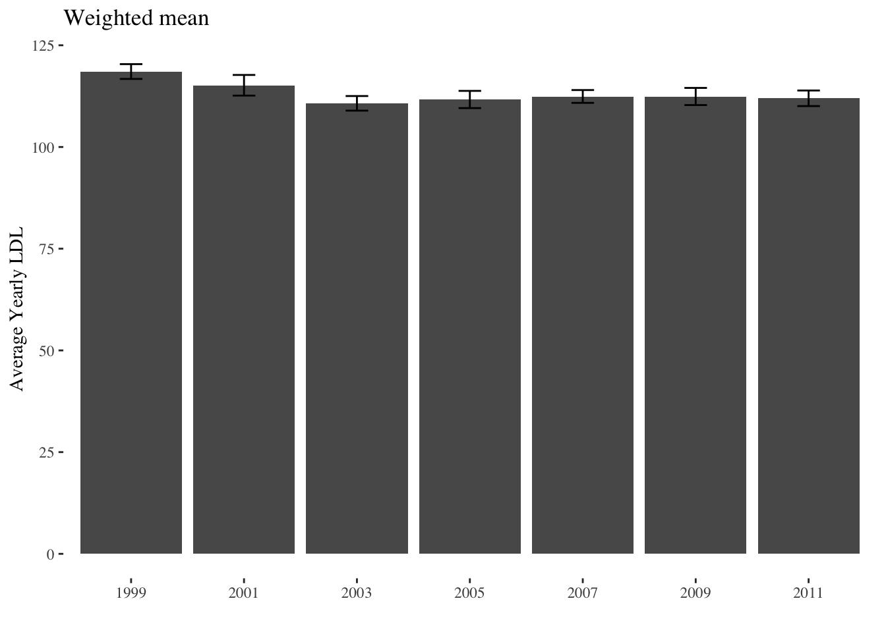
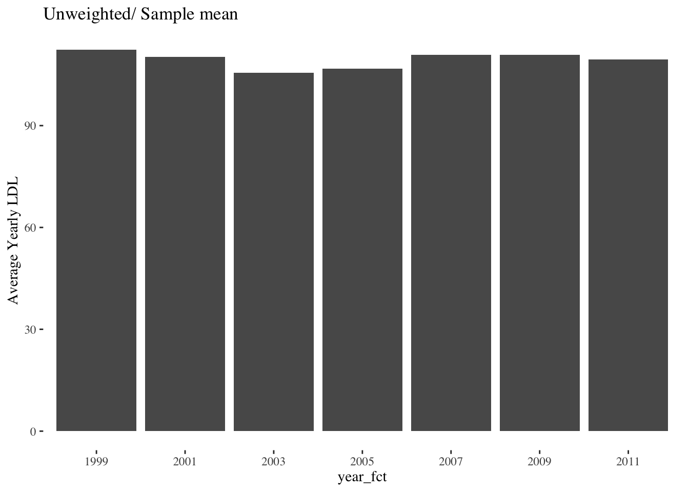
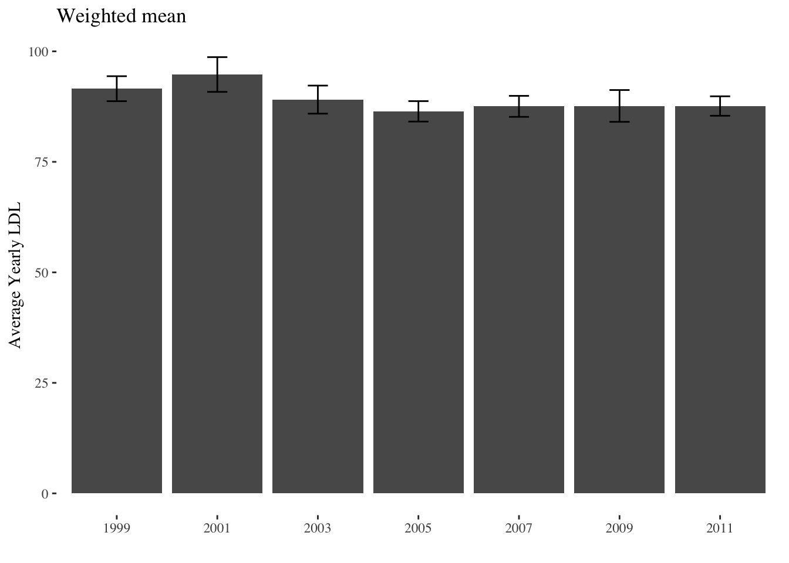
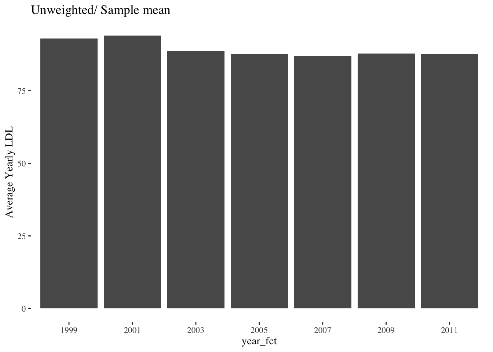
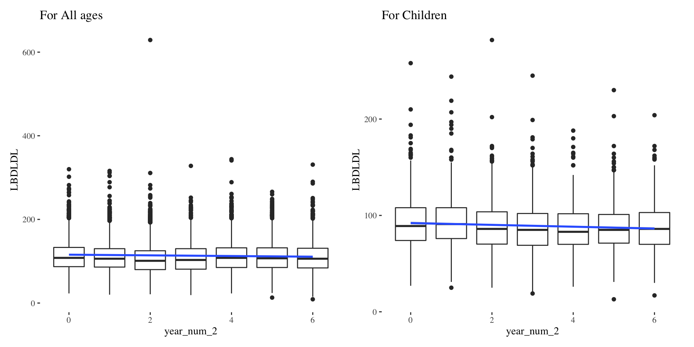
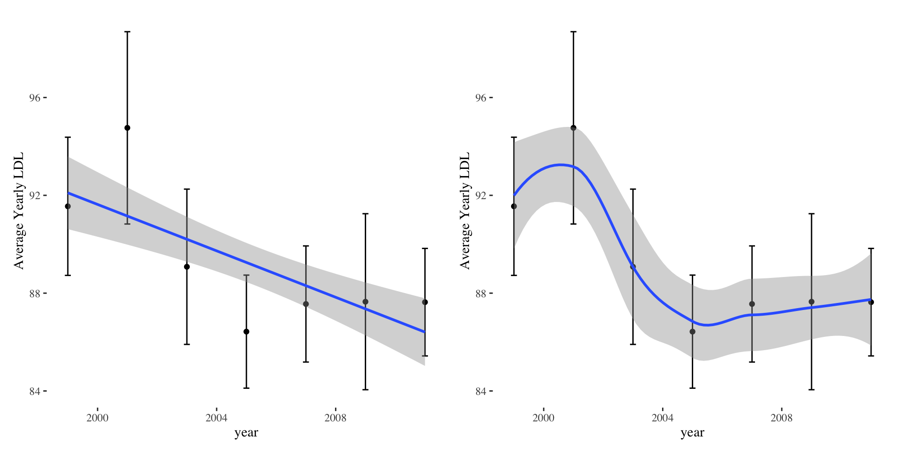
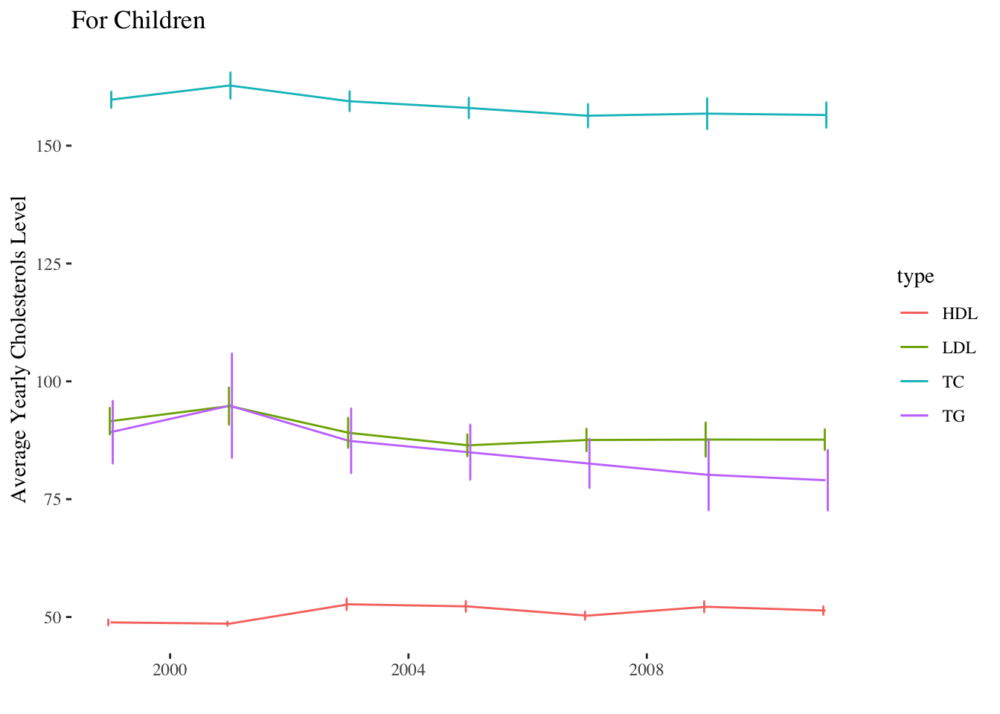
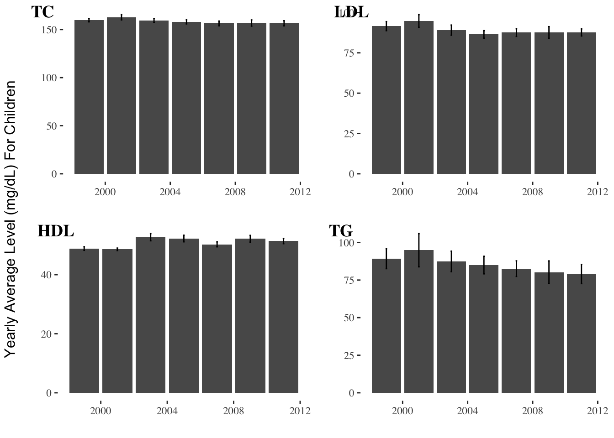

Data Scource: NHANES
Pre process : See Git
survey_df = read_csv("data/nhanes_99_11_raw.csv")
survey_df$year_num = as.numeric(as.factor(survey_df$year) )
survey_df$year_num_2 = (as.numeric(survey_df$year )- 1999)/2
survey_df$year_fct = as.factor(survey_df$year)
# survey_df[,.N]
# survey_df[,.N, by = year]
# plot(survey_df[,.N, by = year])Design survey objects using PSU, Strata and Weights.
Since we are not combining multiple years together, we use 2-Year medical examination weight.
However, we do have to subset design for subpopulation: Children
# for all ages
nhanes_svy =
svydesign(
id = ~ SDMVPSU,
strata = ~ SDMVSTRA,
weights = ~ WTMEC2YR,
data = survey_df,
nest = TRUE
)
# for children
nhanes_svy_kid =
subset(nhanes_svy,
RIDAGEEX <= 18*12 & RIDAGEEX >= 12*12
)
For All Ages
# weighted bar plot
svyby_adult_1 =
svyby(
formula = ~ LBDLDL,
by = ~ year_fct,
design = nhanes_svy,
FUN = svymean,
na.rm = TRUE,
keep.names = FALSE
)
ggplot(
data = svyby_adult_1,
aes(x = year_fct, y = LBDLDL)
) +
geom_col() +
geom_errorbar(
aes(ymin = LBDLDL - 2 * se, ymax = LBDLDL + 2 * se),
width = .2,
position = position_dodge(.9)
) +
labs(y = "Average Yearly LDL", x = "", title = "Weighted mean")
### unweighted all age
survey_df %>%
group_by(year_fct) %>%
summarise(mean_ldl = mean(LBDLDL, na.rm = TRUE)) %>%
ggplot(
aes(x = year_fct, y = mean_ldl)
) +
geom_col() +
labs(y = "Average Yearly LDL", title = "Unweighted/ Sample mean")
For Children
## --- -- -- weighted Children -- -- - -- -##
svyby_kid_1 =
svyby(
formula = ~ LBDLDL,
by = ~ year_fct,
design = nhanes_svy_kid,
FUN = svymean,
na.rm = TRUE,
keep.names = FALSE
)
ggplot(
data = svyby_kid_1,
aes(x = year_fct, y = LBDLDL)
) +
geom_col() +
geom_errorbar(
aes(ymin = LBDLDL - 2 * se, ymax = LBDLDL + 2 * se),
width = .2,
position = position_dodge(.9)
) +
labs(y = "Average Yearly LDL", x = "", title = "Weighted mean")
### unweighted Children
survey_df %>%
filter(RIDAGEEX <= 18*12 & RIDAGEEX >= 12*12) %>%
group_by(year_fct) %>%
summarise(mean_ldl = mean(LBDLDL, na.rm = TRUE)) %>%
ggplot(
aes(x = year_fct, y = mean_ldl)
) +
geom_col() +
labs(y = "Average Yearly LDL", title = "Unweighted/ Sample mean")
Year of the survey entered as a continuous variable, from 0 for NHANES 1999/2000 to 6 for NHANES 2011/2012.
box_plot_1 =
ggplot(data = survey_df,
mapping = aes(x = year_num_2, y = LBDLDL)) +
geom_boxplot(aes(group = year_num_2)) +
guides(color = FALSE) +
geom_smooth(method = "lm",
se = TRUE,
mapping = aes(weight = WTMEC2YR)) +
labs(title = "For All ages ")
box_plot_2 =
ggplot(data = filter(survey_df, RIDAGEEX <= 18*12 & RIDAGEEX >= 12*12),
mapping = aes(x = year_num_2, y = LBDLDL)) +
geom_boxplot(aes(group = year_num_2)) +
guides(color = FALSE) +
geom_smooth(method = "lm",
se = TRUE,
mapping = aes(weight = WTMEC2YR)) +
labs(title = "For Children ")
box_plot_1 + box_plot_2
Compare weighted mean of LDL. Linear & Smooth
point_plot_1 =
svyby( ~ LBDLDL , ~ year, nhanes_svy_kid, svymean, na.rm = TRUE) %>%
ggplot(aes(x = year, y = LBDLDL)) +
geom_point() +
geom_errorbar(
aes(ymin = LBDLDL - 2 * se, ymax = LBDLDL + 2 * se),
width = .2,
position = position_dodge(.9)
) +
geom_smooth(
data = filter(survey_df, RIDAGEEX <= 18*12 & RIDAGEEX >= 12*12),
method = "lm",
se = TRUE,
mapping = aes(x = year , y = LBDLDL, weight = WTMEC2YR)
) +
labs(y = "Average Yearly LDL")
point_plot_2 =
svyby(~ LBDLDL , ~ year, nhanes_svy_kid, svymean, na.rm = TRUE) %>%
ggplot(aes(x = year, y = LBDLDL)) +
geom_point() +
geom_errorbar(
aes(ymin = LBDLDL - 2 * se, ymax = LBDLDL + 2 * se),
width = .2,
position = position_dodge(.9)
) +
geom_smooth(
data = filter(survey_df, RIDAGEEX <= 18 * 12 & RIDAGEEX >= 12 * 12),
method = "loess",
se = TRUE,
mapping = aes(x = year , y = LBDLDL, weight = WTMEC2YR)
) +
labs(y = "Average Yearly LDL")
point_plot_1 + point_plot_2
For four types of lipid analytes
yearly_avg_kid_ldl = svyby(~ LBDLDL , ~ year, nhanes_svy_kid, svymean, na.rm = TRUE)
yearly_avg_kid_hdl = svyby(~ LBDHDD , ~ year, nhanes_svy_kid, svymean, na.rm = TRUE)
yearly_avg_kid_tc = svyby(~ LBXTC , ~ year, nhanes_svy_kid, svymean, na.rm = TRUE)
yearly_avg_kid_tg = svyby(~ LBXTR , ~ year, nhanes_svy_kid, svymean, na.rm = TRUE)
yearly_avg_kid_ldl$type = "LDL"
colnames(yearly_avg_kid_ldl)[2] = "value"
yearly_avg_kid_hdl$type = "HDL"
colnames(yearly_avg_kid_hdl)[2] = "value"
yearly_avg_kid_tc$type = "TC"
colnames(yearly_avg_kid_tc)[2] = "value"
yearly_avg_kid_tg$type = "TG"
colnames(yearly_avg_kid_tg)[2] = "value"
yearly_avg_kid_combo = bind_rows(list(yearly_avg_kid_ldl,yearly_avg_kid_hdl,yearly_avg_kid_tc,yearly_avg_kid_tg))
yearly_avg_kid_combo$year = as.numeric(yearly_avg_kid_combo$year)
yearly_avg_kid_combo %>%
ggplot() +
geom_line(aes(x = year , y = value , color = type)) +
geom_errorbar(aes(x = year, ymin = value - 2 * se, ymax = value + 2 * se, width = .1, color = type),position = position_dodge(.1)) +
labs(x = "" , y = "Average Yearly Cholesterols Level", title = "For Children")
# 2 X 2 bar plot
ldl_bar_plot =
yearly_avg_kid_ldl %>%
ggplot(aes(x = year, y = value)) +
geom_col() +
geom_errorbar(aes(ymin = value - 2 * se, ymax = value + 2 * se, width = .1)) +
labs(x = "", y = "")
tc_bar_plot =
yearly_avg_kid_tc %>%
ggplot(aes(x = year, y = value)) +
geom_col() +
geom_errorbar(aes(ymin = value - 2 * se, ymax = value + 2 * se, width = .1))+
labs(x = "", y = "")
hdl_bar_plot =
yearly_avg_kid_hdl %>%
ggplot(aes(x = year, y = value)) +
geom_col() +
geom_errorbar(aes(ymin = value - 2 * se, ymax = value + 2 * se, width = .1))+
labs(x = "", y = "")
tg_bar_plot =
yearly_avg_kid_tg %>%
ggplot(aes(x = year, y = value)) +
geom_col() +
geom_errorbar(aes(ymin = value - 2 * se, ymax = value + 2 * se, width = .1))+
labs(x = "", y = "")
figure <- ggarrange(tc_bar_plot, ldl_bar_plot, hdl_bar_plot, tg_bar_plot, labels = c("TC", "LDL", "HDL","TG"))
annotate_figure(figure,
# top = text_grob("For Children", color = "black", face = "bold", size = 12),
# bottom = text_grob("Data source: \n ToothGrowth data set", color = "black",
# hjust = 1, x = 1, face = "italic", size = 10),
left = text_grob("Yearly Average Level (mg/dL) For Children", color = "black", rot = 90),
# right = "I'm done, thanks :-)!",
fig.lab = "", fig.lab.face = "bold"
)
# Trend test for all analytes
md_ldl <- svyglm(LBDLDL ~ year_num_2 + as.factor(RIDRETH1) + as.factor(RIAGENDR) + RIDAGEEX, design = nhanes_svy_kid)
md_hdl <- svyglm(LBDHDD ~ year_num_2 +as.factor( RIDRETH1) + as.factor(RIAGENDR) + RIDAGEEX, design = nhanes_svy_kid)
md_tg <- svyglm(log(LBXTR) ~ year_num_2 + as.factor(RIDRETH1) + as.factor(RIAGENDR) + RIDAGEEX, design = nhanes_svy_kid)
md_tc <- svyglm(LBXTC ~ year_num_2 + as.factor(RIDRETH1) + as.factor(RIAGENDR) + RIDAGEEX, design = nhanes_svy_kid)trend_res =
bind_rows(
list(LDL = tidy(md_ldl)[2, ],
"HDL" = tidy(md_hdl)[2, ],
TC = tidy(md_tc)[2, ],
"*TG" = tidy(md_tg)[2, ]),.id = "analyte")
knitr::kable(trend_res[,-2])| analyte | estimate | std.error | statistic | p.value |
|---|---|---|---|---|
| LDL | -0.9453987 | 0.2766756 | -3.416994 | 0.0009137 |
| HDL | 0.4321529 | 0.0728382 | 5.933052 | 0.0000000 |
| TC | -0.8897557 | 0.2354110 | -3.779585 | 0.0002660 |
| *TG | -0.0257170 | 0.0061622 | -4.173332 | 0.0000637 |
*TG is log transformed due to non gaussian distritbution